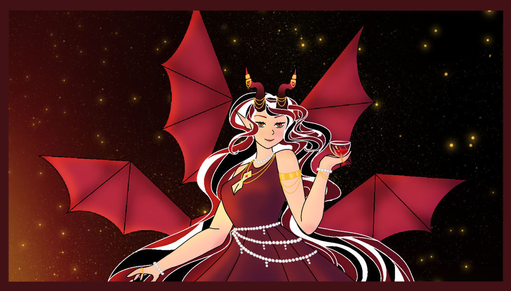
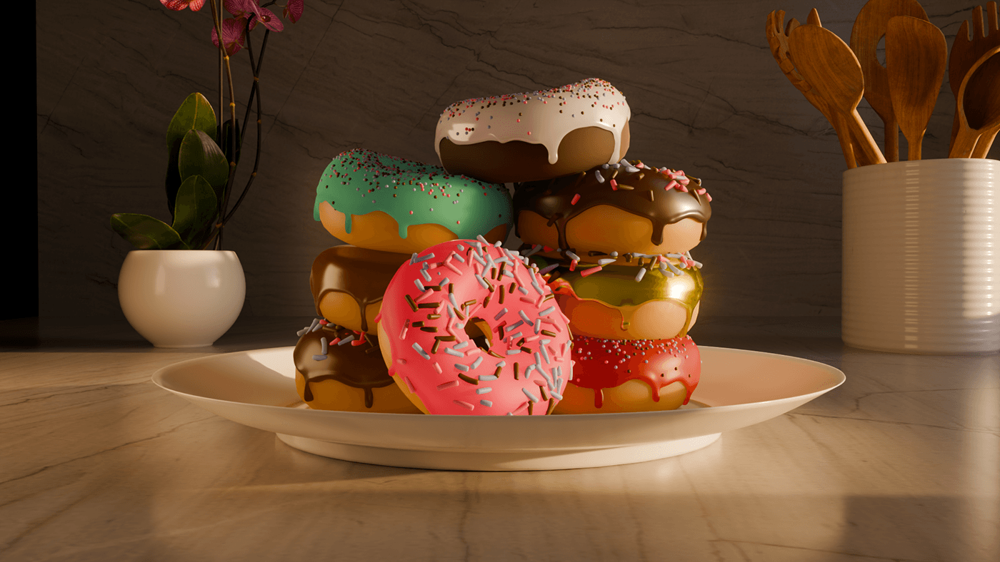

Malvexa988 VTuber Branding
Meet Malvexa. She is a new VTuber on Twitch and has a royalty-like air to her. This project is her persona and brand.

Album Cover - Aurora: A Different Kind of Human
This project is inspired by Aurora's album, A Different Kind of Human, which echoes themes of nature and the harm human greed has caused.

Packaging Design - MoonDrop Coffee
This project includes packaging designs for a fictional coffee brand named MoonDrop Coffee.

Blender - 3D Modeled Donuts
These are 3d modeled donuts made in Blender. What started as a introduction into blender turned into a full blown project that was a great learning opportunity.

Dead of Night
This short story follows a mother who has to fight a disturbing creature to save her children.

Eclipse - A Dress in Transition
This is project is fashion design meets electronic art. This is still a work in progress.

A Light Illuminating
This illustration aims to capture the serene calm of a forest. The bright colors and lighting create a magical feeling.

Wonder Series
This photography series shows places that have given me a feeling of awe and wonder over the years, as I try to replicate that feeling in a single photo of each place. This is still a work in progress and will be uploaded when completed.